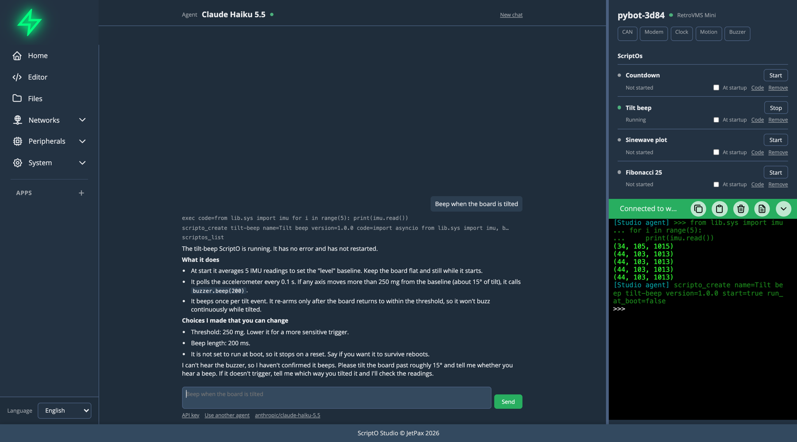
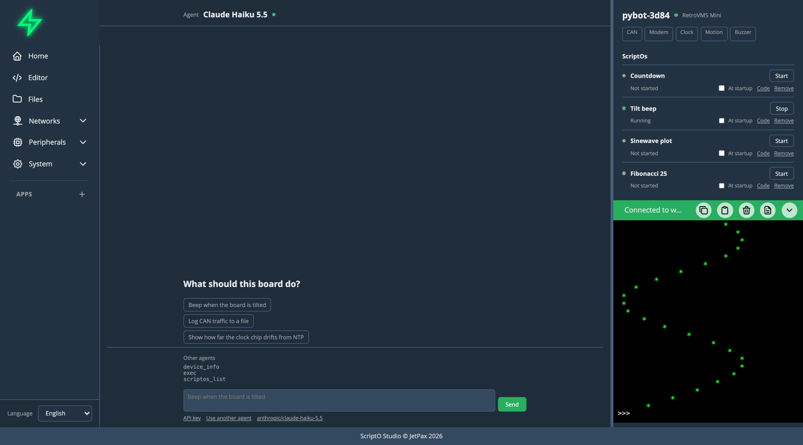

ScriptO Studio
Tell your board what to do.
An agent writes the MicroPython, tries it on your real hardware and leaves it running on the board. You watch every call, and you can stop it at any moment.

Asked to beep when the board is tilted, the agent reads the accelerometer, leaves a ScriptO running, and says what it couldn't check.⟩ How It Works
Connect a board
Flash the firmware from your browser, then connect with the board's password. Studio runs in the browser or as an installable app.
Ask for something
Say what the board should do. The agent looks at what it has, tries things on the hardware and asks you to do what only you can see or hear.
It stays on the board
The result is a ScriptO: MicroPython left on the board to keep running. Start it, stop it or read its code from its row in the sidebar.
⟩ What You Get
An agent in the browser
Nothing to install. Pick any model on OpenRouter, free ones included, on your own key. The key stays in a frame of its own, where the rest of the page can't read it.
Or bring your own
Every board is an MCP server. Studio gives you one line to connect Claude Code or any MCP client, which keeps your repos, shell and subagents and uses the same tools.
Boards that explain themselves
When an agent connects, the board says what it is: its chip, pins and devices, and how to use each one. An agent given nothing else can get to work.
You stay in charge
Every call shows in the chat and its code in the terminal. Studio asks before what's hard to undo, like deleting a file or resetting the board, and Stop is always there.
ScriptOs outlive the chat
What an agent makes stays on the board and runs with no computer attached. It can start at boot, before the network comes up, and if it stops, its row says why.
Made for real hardware
CAN capture finds a signal by what changed when you pressed the brake. A board's manifest can say how to use each part, down to the import line, so an agent doesn't have to guess.
⟩ Things to Ask For
- Beep when the board is tilted
- Log CAN traffic to a file
- Show how far the clock chip drifts from NTP
- Find the CAN messages for the indicators, brake and rear lights, and drive outputs from them
⟩ Bring Your Own Agent
For work that needs your repos or a shell, connect an agent that runs on your computer. Studio gives you this line, with the board's name and token filled in, and shows what the agent does as it happens.
claude mcp add --scope user --transport http <board> http://<board>/mcp --header "Authorization: Bearer <agent token>"

An outside agent's calls appear under Other agents, and its code and output in the terminal.⟩ Apps
Some jobs want a screen as well as code on the board. An App has a browser side too, for tools like OpenInverter and CAN Monitor. Install them from ScriptoHub.